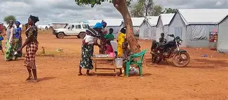
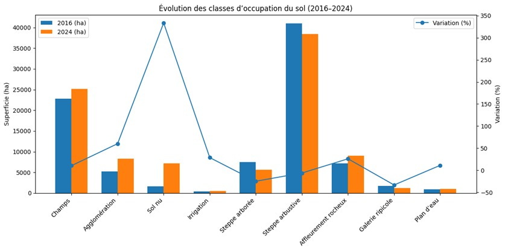

Présentation de l’étude
Cette plateforme présente les résultats cartographiques et analytiques du mémoire portant sur la dynamique environnementale de la commune de Kaya face à l’afflux des déplacés internes entre 2016 et 2024.

Occupation des terres
Changements 2016–2024
Carte des principales transformations de l'occupation des terres.
Voir la carte
Indices environnementaux

Dynamique démographique
Variation de population
Voir la carteFacteurs anthropiques
Cette section présente les principaux facteurs anthropiques identifiés : pression démographique, afflux des PDI, extension agricole, exploitation du bois énergie.


Conclusion
L’analyse met en évidence une anthropisation progressive du territoire, marquée par l’expansion des surfaces agricoles et urbaines, la régression du couvert végétal et une pression croissante sur les ressources naturelles.